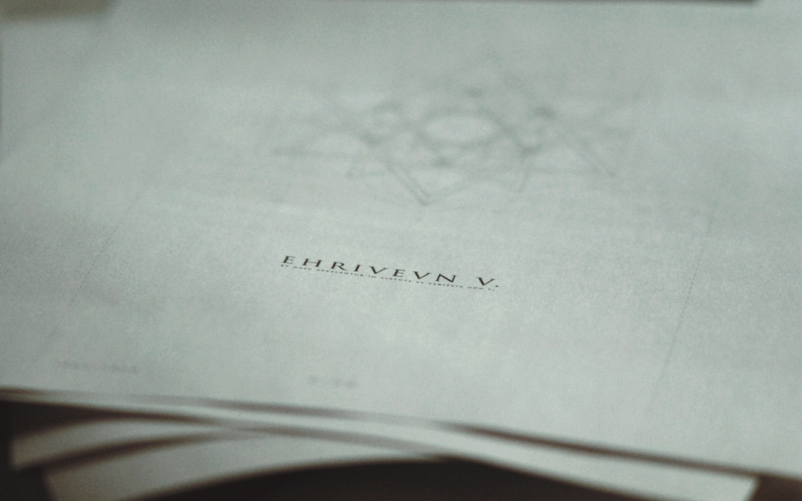
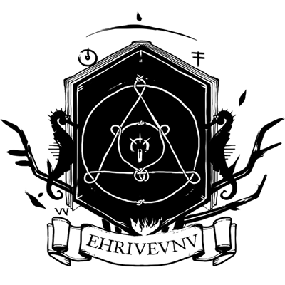
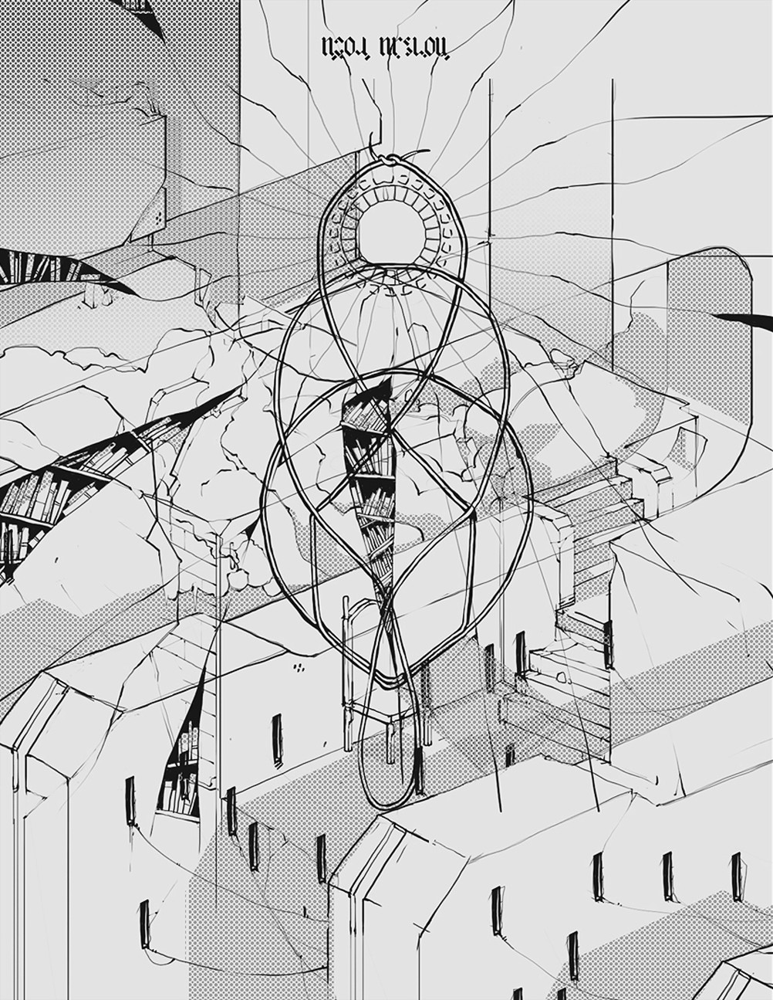

This series of disjointed concepts, characters and places are the connecting thread that lives through Aliceffekt's music, Devine's illustrations, and are the culture behind the Lietal Language.

Es semper noct sub un sol ultraviolet.
Fabuls de Neauismetica, e nasc Les Récits De Dinais, incid super un satelit volant percur cael sin lumin ubi tres viator viv. Ils incip quand omn re claus, ant silent, frigor et Fin de Temps.

Immortals ne loq cum verbs,
sed atend pro incid et monstr.

18V11— Completed Drawtober 202413V08— Completed Drawtober 2019
incoming: audio faqs aliceffekt visual faqs old cities andes castel kanikule neau characters noodle graf3dscene oekaki macintosh identity events 2025 2024 2023 2022 2021